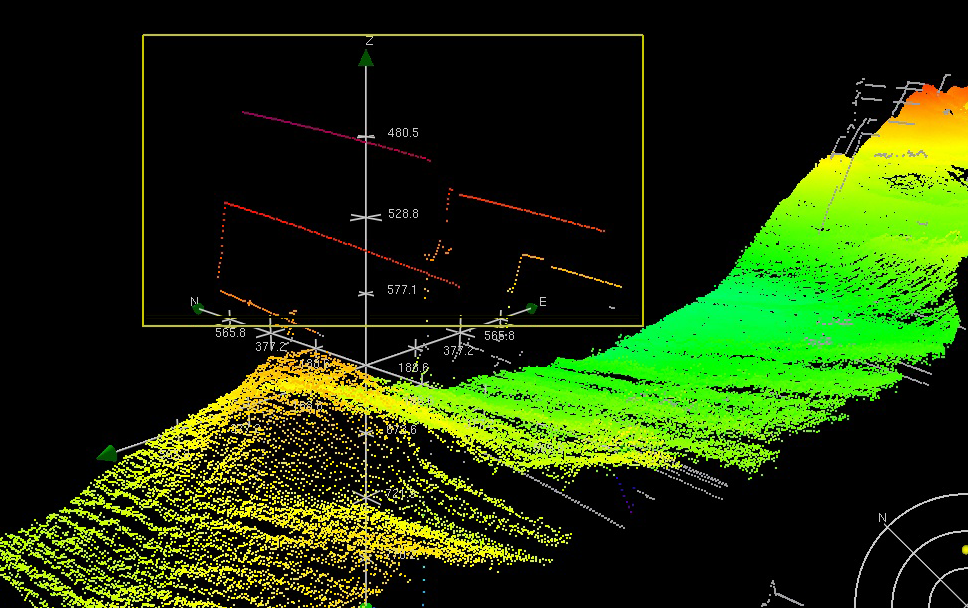

|
VTDP: Data Cleaning
Much scientific and engineering data contains flaws and these can be due to a variety of causes. Sometimes sensors malfunction, and return erroneous values. Sometimes, the sensors are accurate but they record something that is not wanted. If the erroneous values can be definitively characterized, an automatic filter can be created to find them, but often the best that can be done is that the automatic filter flags values that are likely to be flawed. A human operator is required to make to the actual decision.
Example: Modern seafloor mapping is done using multibeam sonars. These measure an array of depths from a single sonar 'ping'. The problem is that these sonars also sense fish and seaweed in the water and problems can occur with the sensors. Because of this automatic cleaning methods are not always reliable and human operators must be involved in the process of deciding if depth soundings are valid or not. The task is important with potentially serious conscquences; for example a data point might be removed that corresponds to a steel mast of a wreck and a chart constructed that fails to show the hazard [1].

The CARIS hydrographic data cleaning system. The yellow box indicates a set of operator selected depth soundings that will be flagged as 'bad'.
The general principle of a visual data editor is to allow technicians to clean data as quickly and efficiently as possible. Some of the ways of achieving this are.
- To provide a view such that outliers data points stand out clearly.
- Provide an editing tool, typically an editing box or a lasso, enabling many soundings to be selected and removed with a single click.
- Run an algorithm to automatically detect likely cases of bad data. These are then highlighted in some way, and the operator's task is to push a button to delete set of detected and highlighted data points.
Visual Data Cleaning Process
Display Environment: A graphic display containing elements representing data.
- Data points are graphically displayed in such a way that potential bad data points stand out clearly.
- In some systems candidate 'bad' data points are automatically flagged by a computer algorithm. These flags are visually displayed.
- A trained operator assesses these data points based on knowledge of the data acquisition system and mentaly categorizes them as good or bad.
- In certain cases the operator executes an epistemic action to drill down and find additional information regarding particular points.
- The operator selects the bad data points and hits a 'delete' button, externalizing the decision.
- The operator executes an action to advance to the next set of points to be cleaned.
- Repeat from 2 as needed.
|
The above is the bare bones of the visual thinking process. In some implementations the loop is a simple look, select, delete, and advance, process. In others it can become extremely elaborate, depending on the task and the amount of additional information that can be brought in to bear on the problem
Implementation Guideline: Implement to optimize throughput, while maintaining quality. Data cleaning systems have an advantage over many visual thinking systems in that performance can be rigorously assessed. In the case of data cleaning, productivity can be measured as can qualilty.
Implementation Guideline: Data cleaning is usually a routine and monotonous task and because of this errors can occur due to operator fatigue. Methods for countering this include having other operators or supervisors check the work.
Implementation Guideline: It is often useful to provide support for systematic and complete processing. Without this operators may inadvertantly miss sections of the data. In addition this can be useful to ensure that sections of data are not inadvertantly processed more than once.
[1] Ware, C., Slipp, L., Wong, K. W., Nickerson, B., Wells, D. E., Lee, Y. C., ... & Costello, G. (1993). A system for cleaning high volume bathymetry.International Hydrographic Review, 69, 77-77.
|